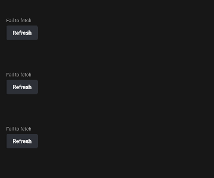
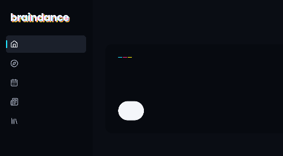
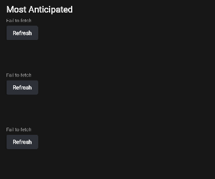
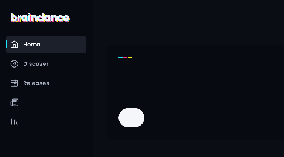
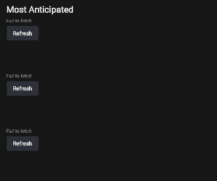
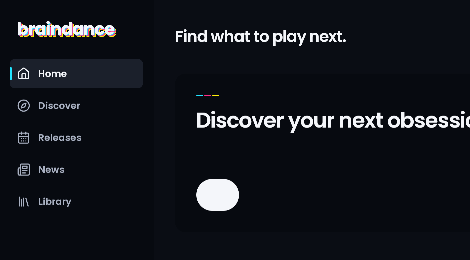
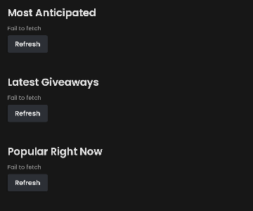
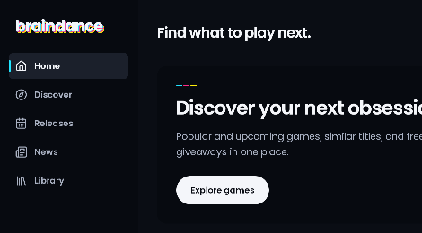
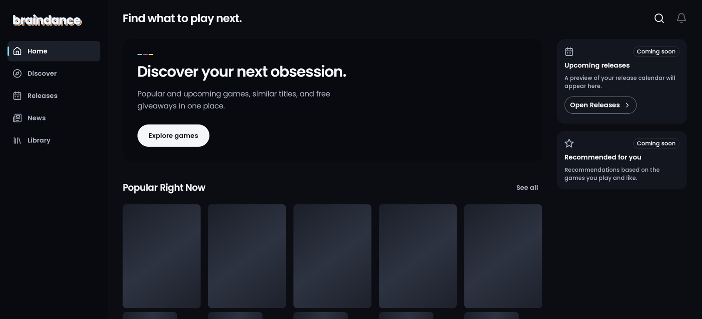
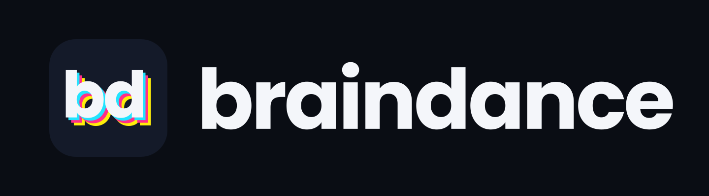

Notes from an Android developer. Still a work in progress.
I'm an Android developer, and most of my work has been Kotlin and Jetpack Compose. On the side, I'm building Braindance, an open-source app that helps you pick your next game with recommendations, what's trending now, and free giveaways. The web app is live at app.braindancegg.com, with Android and iOS coming next.
For the web version, I didn't write a separate JavaScript frontend. I used Compose Multiplatform, which compiles the same Kotlin UI to WebAssembly and draws it into a <canvas>. Running it in a browser took one commit. Making it behave like a website has taken two months, 37 commits, and about 2,300 lines of browser-only code so far.
This post covers what broke along the way, what I changed, and what I measured. Version numbers link to their release notes where a release exists, and the commits are listed at the end.
Stack: Compose Multiplatform 1.12.2, Kotlin 2.4.21 (Kotlin/Wasm), Coil 3.6.3.
What I've done so far
- Caching that survives deploys: content-hashed bundles and fingerprinted Compose resources. A repeat visit downloads only the 4.6 KB page.
- Real website navigation: URLs, Back and Forward, reloads that keep your place, page titles, and link previews for games and giveaways.
- Text on the first frame: a replacement for Compose's web resource reader, plus fonts cut from about 212 KB to 37 KB.
- Smoother scrolling: list prefetching moved out of the wheel event, which halved Chrome's time in wheel handlers.
- Fewer dead ends: a Retry message instead of endless loading when offline, and a workaround for Safari 27.2's white page.
- Desktop habits: middle-click and Ctrl-click to open links in a new tab, draggable scrollbars, and Windows-style autoscroll.
The easy part
The web app started on September 20, 2026, in version 0.3.0. Screens, view models, repositories, and navigation were already shared by the Android and iOS apps, so the first browser build needed only 91 lines of web code:
// webApp/.../Main.kt, first version
@OptIn(ExperimentalComposeUiApi::class)
fun main() {
initKoin(debugHttpLogging = true)
ComposeViewport(document.body!!) {
BraindanceApp()
}
}For Android, that's a fine start. For a website, it was just a canvas in a page:
- Images loaded through Ktor with no disk cache.
- The layout read
window.innerWidthonce and ignored window resizes. - Debug HTTP logging was still on.
Caching: a website doesn't update all at once
The Play Store swaps the whole APK in one go. A browser happily mixes a cached page from one deploy with Wasm files from the next.
Bundles. My first fix put the version into the bundle's file name (0.3.5). Nine days later I moved from GitHub Pages to Cloudflare Pages, which can set headers per path (0.11.2). Now bundles get content-hashed names and Cache-Control: public, max-age=31536000, immutable. Only the HTML is checked again, and the build fails unless there's exactly one hashed bundle.
Compose resources. Strings compile into a binary .cvr file, read at byte offsets baked into the Wasm module. Mix last week's strings with this week's code, and the text comes out garbled.
- Adding the app version to resource URLs (0.10.1) fixed that, but made every release re-download the fonts and strings.
- A content fingerprint works better (0.19.2). A Gradle
ValueSourcecomputes it, so the configuration cache notices changes, andcomposeResources/is cached as immutable too.
When I checked production on November 19, a second visit sent just one request over the network: the 4.6 KB HTML.
One catch: the page's preload tags must use the same fingerprint as the app's own requests. If the URLs differ even in the query string, the browser downloads the file twice. So the project's instructions now require a browser check after every Compose or Coil upgrade.
Navigation: the address bar is part of the app
On a phone, the app owns navigation. In a browser, people expect URLs, Back and Forward, reloads, and pasted links to just work.
Reloads. At first, a reload sent you back to Home. The fix (0.4.2) saves tabs and back stacks in sessionStorage, treated as optional because private windows can refuse it.
Real addresses. These took two tries. Hash routes like #/game/42 went out in 0.8.0, because GitHub Pages couldn't route unknown paths, and plain paths replaced them the same day. That change also fixed Back going somewhere unexpected after switching tabs, and it brought a new model: each history entry stores a snapshot of every tab and back stack. The HistoryMirror KDoc keeps the rule I had to learn the hard way:
Browsers skip entries a page adds without a user action, so adding one while handling Back would desynchronize the two histories.
HistoryMirror is common Kotlin with unit tests, and only a small BrowserLocation adapter touches window.history. It's the same separation that keeps an Android view model testable.
That paid off when game pages got chips for switching editions in place. A new Navigator.replace() (0.25.0) maps to replaceState, so the URL and shared links keep the edition, while Back leaves the game, just like on Android.
Link previews. Crawlers and chat apps only read the HTML <head>, so every address used to look the same. Since 0.24.0, the build writes a copy of the page for each fixed address with its own title and description, plus a sitemap and a real 404. A Cloudflare Pages Function rewrites the <head> for game and giveaway pages using the API's edge cache. It never caches the HTML itself, because the HTML names the current bundle.
Security policy. The content security policy (0.8.0) has to allow 'wasm-unsafe-eval' for Kotlin/Wasm, a blob: worker, and fonts.gstatic.com, where Compose fetches fallback fonts. It also blocked webpack's eval()-based development source maps, so the dev server's app silently never started until I switched to separate .map files. A CI check now fails if the policy gets looser.
Accessibility relies on the hidden DOM mirror of the canvas in Compose Multiplatform 1.12. I haven't tested it properly with a screen reader yet.
Startup: getting text on the first frame
On Android, startup means a cold start of an app that's already installed. On the web, every first visit downloads the whole app before anything appears.
The loading screen improved in steps: a dark background instead of a white page (0.3.6), then a spinner (0.11.1), then the logo inlined as a data URI (0.11.4). As a real <img>, the logo also gives Lighthouse a contentful paint. Before that, Lighthouse found no Largest Contentful Paint element at all, because nothing inside a canvas counts.
Text that showed up late
I assumed fonts made text appear late. So in 0.11.1 I preloaded the fonts and strings, which the app only requests after the Wasm module starts, and dropped two unused font weights (783,828 → 469,992 bytes). The release note promised text in the app's font from the first frame.
It didn't deliver. Tracing a reload frame by frame showed the full layout drawn with no text at all. I rebuilt older versions from Git and captured them the same way, with the API switched off.
Here are both side by side. On the left, the first web build shows titles one at a time in a fallback font. On the right, after the preloads, a redesign, and the caching work, the fallback font is gone, but labels still appear one by one, down to a button with no label yet.
| First web build | After preloads and caching |
|---|---|
| 266 ms  No section titles yet | 166 ms  An unlabeled button |
| 294 ms  One title, fallback font | 241 ms  Some sidebar labels |
| 305 ms  Still the fallback font | 277 ms  Headline appears |
| 424 ms  Every title, in Poppins | 320 ms  Complete |
The components-resources 1.12.2 sources explained why:
stringResource()starts empty andFont()starts with a fallback, so the first composition never has the right text.- Every read goes through a Cache Storage copy that Compose deletes on each page load. That took about 107 ms in my trace.
- Reads are serialized behind a mutex. Replayed in JavaScript, they cost about 1.95 ms per string, or 340 ms for all 174 strings.
The preloaded files were already in the HTTP cache. The app just couldn't get them out quickly.
Reading resources once
In 0.26.0 I replaced the resource reader through the documented LocalResourceReader hook. WebResourceReader fetches each file once at its fingerprinted URL and keeps the strings in memory. Then WebAppHost keeps the HTML loading screen up until every string and font is cached:
// shared/src/wasmJsMain/.../WebAppHost.kt (trimmed)
CompositionLocalProvider(
LocalResourceReader provides WebResourceReader,
LocalPlatformPrefetchScheduler provides prefetchScheduler,
LocalUriHandler provides WebUriHandler,
) {
if (rememberStartupResourcesLoaded()) {
PageAutoscrollHost(content)
// Compose draws this composition in the same animation frame, before the browser paints.
SideEffect(::removeLoadingScreen)
}
}Two details mattered:
- The loading screen had to move outside the app's container, because
ComposeViewportempties that container when it starts. - Removing it from a
SideEffect, instead of waiting an extra frame, saved about 85 ms.
If a resource fails to load, the gate opens anyway.

Is it faster? Honestly, I can't say. A first comparison (259 ms before, 214 ms after) didn't reproduce. Every probe that can see the old build's text also slows the new one, and reading the canvas each frame roughly doubled the new build's time to first screen. With only a mutation observer watching, the new build removes its loading screen at a median of about 283 ms in Chrome 157 and 320 ms in Firefox 160. What I'm sure of is in the screenshots: no more frames with missing labels or the wrong font.
Smaller fonts
Most of Poppins' 1,059 glyphs per weight are Devanagari, which the app never shows. In 0.27.0 I used pyftsubset to keep only English and Spanish (Basic Latin, Latin-1 Supplement, common punctuation, €, ™), with every layout feature intact. HarfBuzz shaped sample text identically in the old and new fonts.
| Measure | Before | After |
|---|---|---|
| Font files | 469,992 bytes (~212 KB compressed) | 57,812 bytes (~37 KB compressed) |
| Loading screen gone, slow 4G (3 cold loads each) | 28.44–28.47 s | 27.58–27.60 s |
That's about 0.86 s sooner on Lighthouse's slow 4G profile (150 ms latency, 1.6 Mbps), and the Android and iOS apps got smaller too. The trade-off: other characters, like a Polish ł or a Japanese title, now use a fallback font. For game titles that's a real cost, and I accepted it.
Those 28 seconds are almost entirely the Wasm download. A server-rendered page or a typical JavaScript framework would show readable text long before that. It's the main price of drawing everything with Skia in WebAssembly.
Network: a sleepy API and endless loading
A cold API. On production, the slowest request wasn't a Wasm module. It was the app's first /health call to its own API, which started at 541 ms and finished at 4,734 ms in one observation. The API is a small deployment that can take seconds to wake up. That /health call is a best-effort warm-up the app has sent at startup since 0.3.2, so the API starts waking before Home asks for data. The same release made game reads cacheable GETs instead of POSTs. Timeouts, bounded retries, and cancelling overlapping loads (0.7.1) came straight over from Android practice.
Offline that loaded forever. With the API blocked, web Home stayed in its loading state forever, and the console showed four uncaught Error: Fail to fetch messages.
The repositories use a safeCall helper that maps Exceptions to typed failures. But Ktor 3.6.1's browser engine reports a rejected fetch as kotlin.Error("Fail to fetch", JsError(reason)), and Error isn't an Exception. OkHttp and the Darwin engine throw exceptions, so only the web was affected.
In 0.27.0, a small check recognizes exactly that shape. Any other Error is still rethrown:
// shared/src/wasmJsMain/.../EngineFetchFailure.wasmJs.kt
internal actual fun Throwable.isEngineFetchFailure(): Boolean = this is Error && cause is JsErrorA browser test fetches a closed local port through the real engine, so a future Ktor change to the wrapper will break it. Now each section shows "Can't reach the server" with a Retry button, in Chrome and WebKit.
A preconnect that didn't help. I also tried <link rel="preconnect"> for the API and image hosts. In six cold loads, no request reused the early connection. On slow 4G the 20-second gap outlives Chrome's idle connection, and on fast connections the warm-up request already opens it. I didn't ship it.
Download size and two Safari surprises
Here's what a first visit downloads, rebuilt from Git and compressed with brotli -q 11:
| Build | Skia module | App module | JS loader | Total |
|---|---|---|---|---|
| First web build | 8.64 MB → 2.62 MB | 4.45 MB → 1.10 MB | 0.54 MB → 83 KB | 3.80 MB |
| Font preloads (0.11.1) | 8.65 MB → 2.62 MB | 5.60 MB → 1.25 MB | 0.55 MB → 83 KB | 3.96 MB |
| 0.26.0 | same | 6.09 MB → 1.35 MB | 0.58 MB → 84 KB | 4.06 MB |
- The Skia module never changed.
- The app module grew by about a quarter as features landed. All of 0.26.0 added only 11,735 compressed bytes.
- Material 2 turned out to be about 1% of the app module (~20 KB compressed), so it isn't worth a migration for size.
The Brotli detour. In 0.11.4 I served maximum-quality .wasm.br files through a Pages Function and preloaded the modules. The next release took both out, because Safari hung on the loading screen: its module preload failed with a lost connection. It only reproduced against the live site, which points at the CDN's HTTP/3, though I haven't confirmed that. I also preferred standard hosting behavior over custom serving code, so compression went back to the host's default. That leaves about 20% on the table: production serves the Skia module at 3,291,897 bytes, and brotli -q 11 makes it 2,621,262.
The white page in Safari 27.2. Later, Safari 27.2 and every browser on iOS 27.2 showed a white page with no error. WebKit can corrupt float arguments in JavaScript tail calls into WebAssembly (WebKit bug 329421), and every Skiko export wrapper is such a call (CMP-10986). The fix in 0.15.0 is a small webpack loader:
// webApp/webpack/skiko-no-tail-call-loader.cjs
// Before: export let name = (...a) => (name = loadedWasm._["name"])(...a);
// After: export let name = (...a) => { try { return (name = loadedWasm._["name"])(...a); } catch (e) { throw e; } };A call inside try is never a tail call. A webpack plugin fails the build if any tail-call wrapper reaches a bundle, and a comment says to delete the whole thing once supported Safari versions have the fix.
Scrolling: measuring the probe instead of the app
Habits that carried over from Android:
- The shimmer reads its animated offset in
drawBehindinstead of during composition (0.3.6). AsyncImagereplaced a painter, so Coil decodes covers at display size (0.11.7).- Covers load at the smallest IGDB size that fills the card, as WebP (0.15.1).
A code comment claimed WebP was "about a quarter smaller". When I re-measured five covers at 540×720, it was 3.6% smaller, and one cover was actually bigger. Choosing the right size was the real win: 264×352 covers are 67% smaller than 720p JPEGs.
My first numbers were wrong. They showed 150 ms frames, and most of that was my own probe calling getImageData every frame. Without it, the 95th-percentile frame at 120 Hz was 9.3 ms.
Profiling a development build with synthetic wheel input found the real cost. Of 391 busy samples, 223 were inside ComposeWindow.onWheelEvent, where LazyGridState.onScroll remeasured the grid and ran Recomposer.composeInitial. New rows were being composed inside the DOM wheel event.
Prefetching did nothing. On Android, the platform schedules lazy-layout prefetching between frames. On the web, Compose UI 1.12.2 falls back to NoOpPlatformPrefetchScheduler. So prefetching did nothing, and neither did the "ahead" half of a cache window (0.11.6) whose KDoc said it worked everywhere.
In 0.26.0, WebPrefetchScheduler runs prefetch requests in whatever time is left in each animation frame:
// shared/src/wasmJsMain/.../WebPrefetchScheduler.kt
private fun runUntil(frameDeadline: Double) {
deadline = frameDeadline
while (scope.availableTimeNanos() > 0) {
val queue = highPriority.ifEmpty { lowPriority }
val request = queue.firstOrNull() ?: break
val hasMoreWork = with(request) { scope.execute() }
// A request with more work ran out of time; it continues after the next frame.
if (hasMoreWork) break
queue.removeFirst()
}
requestFrameIfNeeded()
}It relies on PlatformPrefetchScheduler, which is marked @InternalComposeUiApi. I chose that over composing rows inside input events. The project docs say to recheck it on every Compose upgrade and delete it once Compose does this itself.
| Scrolling check | Result |
|---|---|
| Chrome, time in wheel handlers over 40 wheel events | 78–104 ms before, 40–57 ms after |
| Firefox, same test | No measurable difference |
| Headless Chrome at 4× and 6× CPU slowdown | Frames held at 16.7 ms, with one 33 ms frame |
Jank has been reported on a Windows laptop, and I haven't reproduced it yet.
Mouse and links: desktop habits a phone never needed
A touchscreen has one kind of tap. A desktop browser has hover, a middle button, modifier keys, and years of user habits.
Small fixes:
- Cards show a hand cursor (0.11.1).
- Focus highlights appear only in keyboard mode (0.13.0).
- Pull-to-refresh is touch-only, because a wheel overscroll never "releases" (0.11.1).
- Carousels have previous and next buttons (0.3.1), hidden on touchscreens (0.11.3).
- The web host enables a desktop layout with a sidebar (0.12.0).
- Sharing uses the Web Share API, or copies the link where there's no share sheet (0.22.0).
- Desktop pages get Compose's
VerticalScrollbarwhen a media query reports a precise pointer (0.26.1). It hides half a second after scrolling stops, without the fade under reduced motion.
Links you can open in a new tab
A canvas has no <a> elements, and clickable only reacts to the primary button. In 0.26.0 I added Modifier.routeLink(route), a common modifier that builds the address with the same toWebPath() the history code uses. It's a no-op on Android and iOS, so shared components can use it without platform checks. On the web, it classifies each press before the element's click handler sees it:
// shared/src/wasmJsMain/.../RouteLink.wasmJs.kt
internal fun linkPress(primary: Boolean, middle: Boolean, ctrl: Boolean, meta: Boolean, shift: Boolean,
isApplePlatform: Boolean): LinkPress =
when {
middle -> LinkPress.OpenInNewTab
!primary -> LinkPress.Activate
ctrl && isApplePlatform -> LinkPress.Ignore // a Ctrl-click is a secondary click on Apple systems
shift || (if (isApplePlatform) meta else ctrl) -> LinkPress.OpenInNewTab
else -> LinkPress.Activate
}For a new-tab press, it consumes the release and calls window.open(url, "_blank", "noopener") while the browser still has user activation. The browser then places the tab just as it would for a real link.
0.27.0 extended it to more places:
- The profile and search buttons, "Explore games", "Open Releases", "Open News", and version chips.
- The inline link in "Expansion for The Witcher 3". A new
routeTextLinkasks the text layout whether a press hit the link's characters. - External links. They already open a new tab on a normal click, so they only needed the middle button.
Right-click didn't work out. The browser only shows its link menu over a real link, and Compose cancels contextmenu anyway. I built a prototype that slipped an invisible <a> under the pointer. But it inserted DOM on every right-press, stole the next pointer-up, needed cleanup timers, and would have required declaring every route by hand. I never committed it.
Autoscroll, which I'd written off
Windows browsers autoscroll a page when you middle-click it, but only for scrollable page elements, and a Compose list isn't one. 0.27.0 builds it anyway. WebAppHost watches for middle presses in the main pointer pass, which reaches the root after everything under the pointer has seen the event:
// shared/src/wasmJsMain/.../PageAutoscroll.kt
// The main pass reaches this root after everything under the pointer, so a link that took the press is known.
val press = awaitPointerEvent(PointerEventPass.Main)
val change = press.changes.first()
val autoscrollPress =
press.type == PointerEventType.Press &&
change.type == PointerType.Mouse &&
press.buttons.isTertiaryPressed &&
!change.isConsumedLinks consume their middle press, so autoscroll only starts when nothing else claimed it. Pages register through the scrollbar call they already make, so new screens need no extra wiring. The root scrolls the innermost page under the pointer on each animation frame through ScrollableState.scroll. That counts as user input, so the scrollbar shows and a wheel scroll takes over.
How it behaves:
- After a click, it keeps scrolling until the next click or Esc.
- If you hold the middle button while moving, it stops when you let go.
- It's Windows-only. macOS has no such convention, and Linux pastes on middle click.
- It moves only the page, not the horizontal rows inside it.
I tested it in headless Chrome told it was running on Windows, not on an actual Windows machine.
What's still missing
- Right-click menus: none.
- Link address on hover: browsers only show it for real link elements. I could draw a look-alike, but I haven't decided whether it's worth it.
- Text selection: works only inside a
SelectionContainer. Giveaway descriptions use one, and most other text doesn't. - Wheel distance: Compose 1.12.2 converts wheel deltas with no app setting, so a notch can scroll less than a normal page. Firefox on Windows is probably the worst case. I won't ship a guessed multiplier.
- Testing coverage: most measurements come from one Mac, in Chrome and Firefox. Safari, Edge, Windows, and phones are next.
- Download size: better Brotli could still cut the first visit by about a fifth.
Advice for other Android developers
- The web target is the cheap part. Treat the browser as its own platform, with its own history, caching, deployment, HTML metadata, and pointer conventions. For me, that was 37 commits and about 2,300 lines on top of a shared UI.
- Content-hash everything you cache, Compose resources included.
- Read your framework's web code. My two biggest wins came from reading Compose sources, not from error messages.
- Check what each platform throws. A failed request that's an
IOExceptionon Android is akotlin.Errorfrom the browser engine. - Doubt your own claims. "Text from the first frame", "WebP is a quarter smaller", and "the cache window works on every target" all turned out to be at least partly wrong.
- Measure production builds, and make sure your probe isn't what you're timing.
- Guard every workaround with a build check and a note on when to remove it.
Try it
Compose Multiplatform gave Braindance a web app with the same screens and logic as the phone apps. Much of the rest has been building, one commit at a time, what a regular website gets for free. Some gaps won't close from inside the app, and some I still have to go and find.

Braindance helps you find what to play next: popular and upcoming games, games like the ones you already love, and free game giveaways.
- Web: live now at app.braindancegg.com.
- Android: alpha testing comes next. Join the Discord to try early versions.
- iOS: after Android.
- Ideas and bugs: r/BraindanceGG or GitHub, where all the code is open source.
- News: @braindancegg on X, Bluesky, and Threads.
If something feels wrong in your browser, I'd like to hear about it.
Where to find the code
The full source is on GitHub. These are the changes this post describes:
- The first web build: the
webAppmodule - Caching: versioned bundle name, Cloudflare Pages and hashed files, versioned resource URLs, content fingerprint
- Navigation: restore after reload, hash routes, plain paths and history snapshots, editions with
replaceState - Page metadata and security: per-page titles and link previews, content security policy, CI policy check
- Startup: dark background, spinner and font preloads, resource reader and startup gate, font subset and offline fix
- Network: warm-up and cacheable reads, timeouts and retries, cancelling overlapping loads
- Download size and Safari: Brotli and module preloads, the Safari fix that removed them, the tail-call workaround
- Scrolling: images at display size, smallest covers as WebP, the cache window, the prefetch scheduler
- Mouse and links: keyboard-only focus, carousel buttons, desktop layout, sharing, scrollbars, new-tab links, more links and autoscroll
How I measured
- Machine: a MacBook Pro with Apple silicon and a 120 Hz display, running Chrome 157 and Firefox 160.
- Builds: production builds, except for function-level profiling. Older versions were rebuilt in Git worktrees with their own toolchains.
- First frames: a script read the canvas after each animation frame, with every API request failing.
- Startup: a
MutationObserverwaited for the loading screen to disappear. - Fonts and preconnect: headless Chrome over DevTools, with fresh profiles, a local gzip server, and the production API. DevTools throttling adds latency per request but not per connection.
- Scrolling: 40 synthetic wheel events of 100 px, 40 ms apart, three runs per build.
- Resource reads: the default reader's steps replayed 174 times in JavaScript.
- Sizes:
brotli,gzip, andcurl.
The limits are real: one fast machine, mostly localhost, synthetic input, and small samples. None of this tells you how the app behaves on Windows, Safari, phones, or slower hardware.
P.S. If this post was useful, please consider giving a ⭐ to the Braindance GitHub repository. Thank you! 🙏